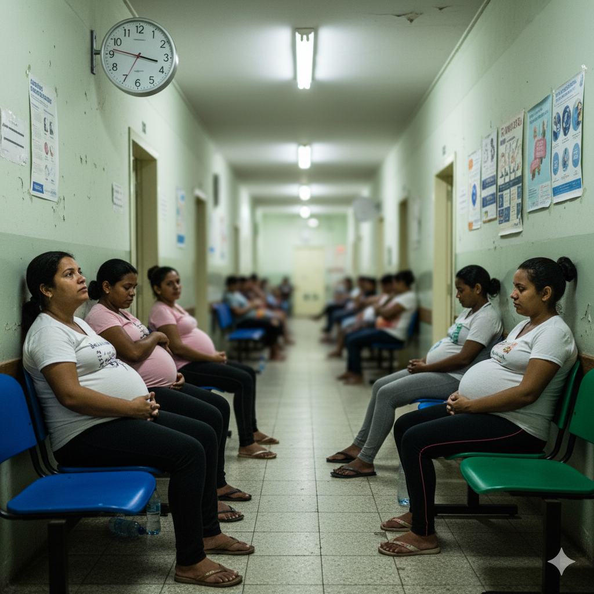

1 / 5 — Justiça clínica
A JUSTIÇA CLÍNICA EM UMA DECISÃO DE REGULAÇÃO É INEGOCIÁVEL.
Nenhuma gestante de
alto risco
merece esperar numa fila
👩🦰
';">
Gestante de Alto Risco
🏥
';">
Tempo é Crítico
Copiloto Inteligente de Regulação Clínica
IA especializada em análise de risco e tomada de decisão clínica em tempo real
Sistema Ativo
Monitorando
IA Conectada
PRO
🤳
Triagem Automatizada
→
⚖️
Estratificação de Risco
→
🔄
Sincronização SISREG
→
🏥
Decisão em 1 Clique
PRO
Garantia de justiça clínica com velocidade e segurança
De filas cronológicas a filas clínicas em 1 clique.
Voltar ao início →
←
Conhecer a solução
Voltar
Próxima